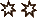

载具战斗
载具战斗的流程与人员战斗类似。但是需要注意，轮廓5及以上的载具通常是数百人在驾驶，所以规则会有一些区别。
先攻
步骤一：每位玩家和NPC进行一次简单（-）难度的警觉或冷静检定，以决定战斗的顺位。使用冷静还是警觉需确定角色的状态，如果角色预感到战斗即将发生并且冷静备战，就使用冷静技能；如果角色并没有意识到战斗的可能，仓促应战，则使用警觉技能。不同的角色可以用不同的技能检定,如果GM和PC不确定使用什么技能，默认使用警觉。判断先手后手的方法为对比 的数量，数量多的人先手。如果的数量一致，就对比
的数量，数量多的人先手。如果的数量一致，就对比 的数量，如果还是一致，则玩家先手，然后GM记录先攻表。
的数量，如果还是一致，则玩家先手，然后GM记录先攻表。
步骤二：玩家生成的顺位记为玩家先攻槽位，NPC生成的记为NPC先攻槽位。
步骤三：从先攻表的顶部开始，玩家和 GM 通过角色回合一次填充每个先攻槽位。 如果先攻槽位是玩家角色先攻槽位，则玩家同意从该轮未行动的玩家角色中选择一个玩家角色来填补该位置。 然后该玩家角色进行本回合，如果先攻槽位是NPC先攻槽位，那么GM会从该轮未行动的NPC中选择一个NPC来填补该槽位。 然后该 NPC 开始本回合。请注意，某些星舰中可以有多名船员。
步骤四：保持步骤一的先攻表重复步骤三，直到战斗结束。
回合中的动作
每个角色（无论是玩家角色还是非玩家角色）在每一轮中都有一个回合可以行动。 在这个回合中，角色有机会进行某些活动，例如从一个地方移动到另一个地方，使用他的技能，甚至攻击他人。 角色在回合中可以执行的活动分为两类：动作和行动。
小型载具战斗
小型单人飞船（例如星际战斗机和巡逻艇或飞艇和单座飞行器）之间的战斗相对简单。 飞行员作为船上唯一的船员，在他的回合中可以进行一次星舰行动和一次星舰动作（或两次星舰动作）。 这意味着他可以在船上飞行和战斗，或者只专注于飞行。 小型飞行器的战斗（尤其是高速飞行器，如飞行器、飞行自行车或星际战斗机）是相当抽象的。 由于载具不断移动并相互争夺上风（由于它们令人难以置信的速度和敏捷性），几乎不可能绘制出星际战斗机的每一个动作。 相反，GM和玩家会描述角色和 NPC 所采取的行动，用叙事来修饰它们，然后进行技能检查来解决这些行动。
大型载具战斗
由于舰船的复杂性和所涉及的船员数量，在轮廓 5 或更高的大型主力级星舰中进行战斗必然更加抽象。 与小型飞船中的战斗类似，主力舰在其驾驶员轮流中只能执行一次星舰行动和一次星舰动作（或两次星舰动作）。 然而，这并不是飞船的固有品质；它是基于飞行员或船长的行动和星舰的动作。 与飞行员一起，船上的每名额外船员都可以使用他的行动和星舰动作来处理武器、操作传感器、在船上移动以及一般参与战斗。 这一切都发生在同一轮中，并且像个人战斗一样受到先攻的影响。 关于与如此巨大的载具进行舰船战斗时需要记住的一点是，每艘船可能有数百或数千名船员。 GM 和玩家不应在战斗中追踪所有先攻位置和行动。 相反，只关注那些实际上正在做与正在进行的遭遇相关的事情的人，并随意忽略其余的。
动作（Maneuvers）
动作比行动涉及的内容更少，是简单的活动，通常不需要技能检查。 除了个人战斗中的所有动作之外，还有几种专门适用于星际飞船和载具的动作。 这些额外的动作遵循通常的动作规则。 此外（尤其是在较大的星舰中），角色被假定能够执行个人操作，例如俯卧、管理装备或与环境互动（ GM 和玩家应该使用常识来判断角色可以做什么和不能做什么）。 这还包括瞄准等动作，因为角色可以使用四激光炮塔瞄准，就像他可以使用爆能枪瞄准一样。 一般来说，个人战斗部分列出的所有动作都适用于所有形式的战斗（具有一定程度的常识）。
当飞船和载具遭遇时，它们应该始终跟踪当前的速度。 一艘船可以以从 0 到最大速度的任何速度运行；但是，加速和减速需要通过动作来完成。
轮廓在 1 到 4 之间的星舰或载具可以从每轮一次“仅限飞行员”动作中受益，如果主动遭受 2 个系统疲劳，则可以从第二次“仅限飞行员”动作中受益（仅限飞行员的动作是影响船舶本身移动的动作，并且船舶只能移动这么快和这么远）。 如果星舰只有一名飞行员，则根据战斗规则，该飞行员还必须承受 2 次压力（或将其行动降级为动作）才能执行两次动作。 有些船只可以有多名飞行员，在这种情况下，每个人都可以执行“仅飞行员”动作，并且只有船只承受系统疲劳。但是，这些船只很少见。
轮廓为 5 或更高的星舰或载具只能从一轮中的一个”仅限飞行员“动作中受益。
加速/减速(Accelerate/Decelerate)
仅限飞行员：是
轮廓：任意
速度：任意
飞行员可以将船舶或车辆的当前速度增加或减少 1，最小为 0 或最大为船舶的最大速度等级。
起飞/加速（Fly/Drive）
仅限飞行员：是
轮廓：任意
速度：任意
这种星舰动作反映了以当前速度将飞船和载具移近或远离某物的简单行为。 船舶或车辆移动通过给定数量的范围带所需的星舰动作次数取决于其速度。 重要的是要记住，距离是基于移动船舶的视角，而不是实际物理距离的度量。 无论速度如何，在一个范围带和下一个范围带之间移动总是需要两次动作，但以下情况除外：
速度0：船舶或车辆不移动，并且在加速之前无法使用此星舰动作。
速度1：一个星舰动作在目标或物体的近距离内移动，或两个星舰动作从近距离移动到短距离或从短距离移动到近距离。
速度2-4：一个星舰动作在目标或物体的近距离内移动，或者从近距离移动到短距离或从短距离移动到近距离。 两个星舰动作，从近距离移动到中距离或中距离到近距离。
速度5-6：一个星舰动作在目标或物体的近距离内移动，或从近距离移动到中距离或从中距离移动到近距离。 两个星舰动作，从近距离移动到长距离或从长距离移动到近距离。
回避（Evasive Maneuvers）
仅限飞行员：是
轮廓：1-4
速度：3+
规避动作反映了飞行员为避免来袭火灾、碰撞或其他灾难而做出的努力。执行规避动作使对船只进行的所有攻击升级一难度，直到飞行员的下一个回合结束为止，。 虽然这使得执行星舰动作的飞船更难被击中，但也使得执行星舰动作的飞船更难击中其他物体。执行规避动作同样会使船舶发起的所有攻击升级一难度，直到飞行员下一轮结束为止。 规避动作只能由轮廓为 4 或更低的船只和车辆进行。 任何较大的物体通常都太慢或太笨拙，无法进行规避动作。
保持锁定（Stay on Target）
仅限飞行员：是
轮廓：1-4
速度：3+
这反映了飞行员的专注力和排除战斗相关压力和干扰的能力，以确保击中目标或摧毁对手。 在飞行员的下一个回合结束之前，执行此动作的车辆或船只的所有战斗检查都会升级骰子池的能力一次。 不幸的是，虽然他如此专注于他的目标，但飞行员却排除了所有其他威胁，并且成为对手更容易攻击的目标。 针对执行此星舰动作的船只进行的任何战斗检查也会升级其能力一次，直到飞行员的下一轮结束。 这种星舰动作仅限于小型舰艇，如星际战斗机和巡逻艇； 只有轮廓为 4 或更低的船只和车辆才能保持锁定。
推进（Punch It）
仅限飞行员：是
轮廓：1-4
速度：任意
通过将油门调至最大并使船舶或车辆的驱动装置超载，该操作允许船舶或车辆从任何其他速度立即达到其最大额定速度。 虽然速度很快，但它也会给船舶或车辆带来过度的压力。 当执行这种星际飞船动作时，飞船或飞行器在飞船当前速度与其最大速度之间的每一个速度点都会遭受一个系统疲劳。
例如，一架 YT-1300 轻型货轮的飞行员在一颗大小行星的背风处以 0 速躲避帝国海军巡逻队。 突然，他遭到了两名钛战机的袭击，他认为谨慎是勇气的重要组成部分，于是推进。 他立即将油门调至最大设置，船开始苏醒。 虽然他毫发无伤地逃脱并能够跳跃到超空间，但突然的加速给他的飞船带来了三点系统疲劳。
这种星舰动作仅限于轮廓 4 或更低的舰船，因为较大的舰船质量太大，无法如此快地加速。
调整偏导护盾（Angle Deflector Shield）
仅限飞行员：否
轮廓：任意
速度：任意
使用这种策略，有权使用护盾控制装置的船员可以将最多一个防御点从一个防御区域重新分配到另一个防御区域。 例如，玩家可以用船尾防御区域的一个点来支撑船只的前部防御区域。只有当飞船和载具具有可以重新分配的防御（例如偏导护盾）时，此操作才有效。
行动（Actions）
在涉及星舰或载具的战斗中，角色可以执行一些追加的行动，这些行动特别适用于他们所操作的飞船或载具。 其中一些行动被标记为仅限飞行员行动。 飞船和载具船每轮只能受益于一次仅限飞行员的行动，无论船上有多少名船员。（仅限飞行员的行动是影响船舶本身运动的行动，并且船舶只能移动这么快和这么远。）
请记住，在常识范围内，第六章“冲突与战斗”开始列出的任何行动也可以在涉及飞船和载具的战斗中进行。
损害控制(Damage Control)
仅限飞行员：否
轮廓：任意
速度：任意
当一艘船的船体在敌人激光炮的攻击下摇晃和嘎嘎作响时，火花四溅，系统开始失效。 损害控制行动是为了减轻这种系统疲劳，无论这种系统疲劳是由战斗还是事故引起的。 使用此行动，任何成功进行机械检查的玩家角色每次成功都会恢复一点系统疲劳。机械检查的难度由船舶当前承受的系统疲劳决定（参见表 7-2：损害控制难度） 。 可以根据需要多次尝试损害控制，以将船舶的系统疲劳降低到零（当然，需要注意的是，单个角色每回合仍然只能执行一个行动）。
同样，即使在正在进行的战斗中，熟练的机械师也可以修复车辆受到的一些车体损伤，尽管这要棘手得多。 一般来说，PC每次遭遇只能尝试一次损害控制检查来减少船体创伤（每次成功减少一点）——如果没有适当的造船厂的设施，只能完成这么多的维修。 此外，GM 是 PC 是否可以尝试修复船体损伤的最终仲裁者（在空战中，小型战斗机飞行员无法爬出驾驶舱来修补机翼，飞行摩托驾驶者也无法在穿过森林时重新安装其中一个控制面）。
角色还可以使用此行动来修复船舶遭受的重伤。修复重伤的难度列于第 250 页的表 7-9：重伤结果。可以多次尝试修复重伤的检查，直到重伤修复为止。
损害控制难度
| 系统疲劳 |
船体创伤 |
难度 |
| 系统疲劳低于系统疲劳上限的一半 |
船体创伤低于船体创伤上限的一半 |
简单（ ） ） |
| 系统疲劳大于等于系统疲劳上限的一半 |
船体创伤大于等于船体创伤上限的一半 |
普通（） |
| 系统疲劳超过系统疲劳上限 |
船体创伤超过船体创伤上限 |
困难（） |
取得优势(Damage Control)
仅限飞行员：是
轮廓：1-4
速度：4+
这一行动反映了星际战斗机等小型飞行器与巡逻艇或飞行器等高速飞行器之间持续不断、疯狂的缠斗。 它允许飞行员在单个对手上占据上风，以便他在下一轮中为更好的攻击做好准备。 为了执行此星舰行动，飞行员进行驾驶检查，其难度取决于参与攻击的船只或车辆的相对速度。 表 7-3：速度优势难度中概述了具体难度。 如果检定成功，飞行员将忽略由于他自己和他的对手使用星舰动作“回避”而施加的所有处罚，直到下一轮结束。 此外，飞行员还可以选择攻击的防御区域。 如果他的检定失败，他就无法从这次尝试中获得优势，并且仍然会受到任何“回避”动作的影响。
一旦获得优势，在下一个回合中，对手也可以尝试使用“取得优势”来抵消优势。 这正如前面所描述的那样工作，但是每当他或他的对手成功地获得对另一方的优势时，他的检定就会变得更加困难。
速度优势难度
| 速度 |
难度 |
| 以与目标船相同的速度行驶。 |
普通（） |
| 速度比目标船的速度高一或多级。 |
简单（） |
| 速度比目标船的速度低一级。 |
困难（） |
| 速度比目标船的速度低二或多级。 |
艰巨（） |
其他飞船和载具行动
仅限飞行员：否
轮廓：任意
速度：任意
当在战斗中登上车辆时，那些不驾驶或不发射武器的人可能仍然想为战斗做出贡献。 尽管可供选择的选项数量仅受玩家创造力的限制，但表 7-4：其他飞船和载具行动列出了乘客在遭遇期间可以尝试的一些行动。 该表按名称列出了行动、所需的技能、检查的伴随难度以及成功的结果（如果GM认为合适的话，他们应该修改检查的难度，并且还可以阻止PC使用在某种情况下可能没有意义的某些技能）。 这些行动均包含在“执行技能检查”行动中，但绝不是详尽的列表。 然而，它们确实提供了一系列的想法。
其他飞船和载具行动
| 行动 |
技能和难度 |
结果 |
| 标绘航线(plot course)
|
普通（）太空导航或困难（）察觉 |
船员研究地形并标绘适合安全的航线。成功通过检定时每1个成功减少困难地形所附加的1 。 。 |
| 副驾驶(co-pilot) |
普通（）驾驶 |
船员成为副驾驶员并操作系统与辅助设备使驾驶员专心于飞行或驾驶中。通过检定后，每个成功通过检测将降低驾驶员下1个驾驶检定难度1级。 |
| 干扰(jamming) |
普通（）计算机 |
船员操作系统干扰敌方船舰的通讯设备。当检定成功时，敌方船舰必须做一个普通（）计算机检定以便能继续使用通讯系统。发动方每额外将提高目标电脑检定的难度1级，而每花费1个可以使干扰效果额外作用于1个目标。 |
| 拉升护盾(boost shield) |
困难（）机械 |
船员从其他系统分流能源以拉升载具的防御系统。这只有在船舰拥有防御率(Defense Rating)时才有作用。当检测通过时，承受1点系统疲劳值并选择船体1个区域，在该船员的下一回合开始前提高该区域的防御值1点。每1个额外的将会使效果延长1回合。 |
| 手动修理(manual repair) |
困难（）运动 |
在某些场合，修理行为可以单纯只是拿粗厚金属板铺在系统上。如果GM许可且该船员拥有适合当下情境的工具，该船员可以运动检定代替机械检定来进行维修行动(Repairs Action)。当检定通过时，该船员可以移除1点船体创伤，并且每额外可以多移除额外1点船体创伤。最后，手动维修依然遵循维修行动的规则，因此每个遭遇战只能执行1次。 |
| 炮火纪律(fire discipline) |
困难（）领导或纪律 |
船员放弃分析敌方的战术转而指引他的队友的炮火精準度。如果通过检定，使下1个船员以舰载武器开火时额外增加1 于他的检定中。每2个额外的可以使效果影响额外1名船员。此外，花费 于他的检定中。每2个额外的可以使效果影响额外1名船员。此外，花费 可以让该船员的开火中每1击都使对方承受1点系统疲劳值如同通常船体创伤，因为每一击都是精準地重击护盾并使系统超载。 可以让该船员的开火中每1击都使对方承受1点系统疲劳值如同通常船体创伤，因为每一击都是精準地重击护盾并使系统超载。 |
| 敌舰扫描(scan the enemy) |
困难（）察觉 |
船员透过船舰上的扫描装置研究敌方船舰。通过检测后，船员将理解目标的武器、改造、以及系统疲乏上限与船体创伤上限。如果花费将可以得知目标当前的系统疲劳值与船体创伤程度。 |
| 黑入系统(slice enemy’s system) |
困难（）计算机 |
船员使用舰载的强力电脑试图破坏目标的系统。如果通过检定，每1个使他可以选择该目标船舰1个区域的防御率下降1点直到他的下1个回合。花费 可以使1个武器不能使用1回合，花费可以使目标承受1点系统疲劳值。 可以使1个武器不能使用1回合，花费可以使目标承受1点系统疲劳值。 |
| 诱骗导弹(“spoof”missle) |
困难（）察觉或普通（）计算机 |
船员利用系统追踪来袭的导弹并试图破坏它们的追踪系统，或是计时导弹的时间并抓住时机释放干扰片。当成功通过检定时，攻击该船员所在载具且具有导引能力的武器增加1级难度直到该船员的下1个回合开始，花费每可以额外增加1级难度。 |
做一次战斗检定
仅限飞行员：否
轮廓：任意
速度：任意
这与第 210 页上的“执行战斗检查”操作类似。由于车辆和个人之间的差异，在实施中存在一些细微的差异。 因此，这里重复执行战斗检查的步骤，并在每个步骤中列出车辆武器的差异，而不是在没有上下文的情况下列出。
除非规则另有明确允许，星舰或载具上的每种武器每轮最多只能发射一次。
1.宣告攻击目标
当敌舰在他的瞄准镜中排成一排，耳边响起瞄准系统的声音时，角色选择发动攻击。 他选择用于进行攻击的技能（通常是火炮技能，尽管有些车辆上可能装有需要远程武器(重型)技能的武器）。 星舰或载具上的大多数战斗检查都是使用星舰或载具的武器进行的。 请记住，无论船上有多少角色，特定的星舰或车辆武器每轮只能使用一次。
2.建立骰池
在向目标发射激光火力之前，角色必须根据所使用的技能、其特征以及他拥有的任何适用的天赋和能力来组装一个骰子池。 某些条件，例如重伤效果、对运输工具或车辆造成的重击、车辆的防御或环境效果，也可能会向骰子池贡献骰子。
从载具或星舰射击时，战斗检查的难度是基于比较发射舰艇和目标的轮廓（即使攻击目标不是载具或星舰），并在表 7-5：轮廓比较中概述。 所列出的困难反映了这样一个事实：大型船只发现击中小型快速船只具有挑战性，而它们的体积使它们很容易成为这些小型船只的目标。由于大多数星舰都安装了先进的瞄准计算机，射击的范围与攻击的难度无关； 如果目标在射程内，星舰就可以击中它。 该检定还受到星舰动作、天赋或地形带来的修饰符或任何其他修饰符的影响，由GM自行决定。
当攻击轮廓为 4 或更低的船只时，防御方选择攻击所击中的防御区域。 较小的船只更加敏捷并且不断运动，这意味着在战斗中它们会不断地跳跃、闪避、躲避，并且通常会定位自己，以便它们最强大的防御区域始终面向攻击者。 当攻击轮廓5或更高的舰船时，受攻击影响的防御区域由战斗中舰船的位置决定。 战斗中船只的相对位置由游戏管理员和玩家角色的动作决定，并通过游戏固有的电影游戏风格来说明。
轮廓比较
| 轮廓 |
难度 |
| 发射舰艇的轮廓与目标相同，或者轮廓比目标大或小 1。 |
普通（） |
| 开火船的轮廓比目标船小 2 点或更多 |
简单（） |
| 开火船的轮廓比目标船大 2 点。 |
困难（） |
| 开火船的轮廓比目标船大 3 点。 |
艰巨（） |
| 开火船的轮廓比目标船大 4 点或更多 |
不可能（） |
3. 结算结果及给予伤害
就和其他的技能检定一样，必须比 多才算成功。如果检定成功，每个未取消的都会为成功的攻击增加+1伤害。如果攻击影响多个目标，则附加伤害会加到每个目标上。 请记住，车辆和星际飞船上的大多数武器都会造成行星规模的伤害，这意味着每一点伤害相当于个人规模的十点伤害。
多才算成功。如果检定成功，每个未取消的都会为成功的攻击增加+1伤害。如果攻击影响多个目标，则附加伤害会加到每个目标上。 请记住，车辆和星际飞船上的大多数武器都会造成行星规模的伤害，这意味着每一点伤害相当于个人规模的十点伤害。
4.结算和
如下表。
结算和
| 花费 |
效果 |
| 或 |
给其他友方角色下一次的驾驶、火炮、计算机、机械检定加上1个
在接下来的冲突中，发现一个重要事务，例如：敌舰航行路径上的缺陷、飞艇的弱点等
触发重伤 (根据其值)
发动武器效果 (根据其值)
|
| 或 |
立即执行一次动作 (不能超过1回合2动作的限制)
给一个目标角色下一次的驾驶、火炮、计算机、机械检定加上1个
给友方角色下次的驾驶、火炮、计算机、机械检定加上1个，包括当前玩家
|
| 或 |
若是驾驶，执行一个仅限驾驶的动作(不能超过一个回合能执行的仅限驾驶动作的次数)
无视负面地形或恒星环境，值到当前玩家的下个回合结束
当给予伤害时，将伤害或系统疲劳改为由攻击方选择对某个部件照成暂时性的伤害。并由攻击方和GM一同讨论出一个合理的效果。
迫使敌舰突然改变方向，使对方失去“瞄准”、“保持锁定”的动作
|
|
提升目标角色下一次驾驶、火炮检定的难度
提升友方角色下一次驾驶、火炮、电脑、机械检定，包括当前玩家
为战局做出一个重大的转变，像是轰爆对面大型战舰的护盾发生器、或是在陨石群中甩掉追击的敌舰
|
|
当给予伤害时，将伤害或系统疲劳改为由攻击方选择对某个部件照成伤害，使其完全无法使用直到完全修好。并由攻击方和GM一同讨论出一个合理的效果。
|
5.结算和
如下表。
结算和
| 花费 |
效果 |
| 或 |
舰船受到1点系统疲劳（可多次选择）
当前玩家损失前面的动作带来的好处(掩护、警戒站姿)值到再次执行该动作
若是驾驶，速度-1
|
| 或 |
对手可以立即执行一个免费的动作来响应主动角色的检定。
给目标角色下一次驾驶、火炮检定加上1个
给当前角色或是其他友方角色下个行动加上1个
|
| 或 |
当前角色使用的顺位掉到最后一位
当前敌方带来巨大的优势。针对该角色的检定难度都降一级，直到该角色的下一回合。
|
|
当前角色所操控的主要武器系统，如果当前角色是炮手，那就是他所操控的武器系统，该系统承受部件暴击。找个暴击不计入该船累计的暴击当中
下一次当前角色或一个队友的驾驶、火炮、计算机、机械检定提升一个难度
当前角色遭受轻微的碰撞，撞上近距离的对手，或是撞上他正在经过的恒星环境或地形。
|
| (再加上检定失败) |
当前角色遭受轻微的碰撞，撞上近距离的对手，或是撞上他正在经过的恒星环境或地形。
|
当船只或车辆受到伤害时，它会通过其装甲来减少伤害（与吸收值在个人上的目的相同）。 如果在此减少后仍然存在任何损坏，则车辆将遭受同样程度的船体创伤（应用于其船体创伤阈值）。 如果最终结果为零或负数，则车辆不会遭受车体损伤。 参见第 248 页。
成功的攻击还可以产生暴击，这类似于暴击伤害。发生这种情况的原因是武器的暴击等级被触发，或者目标累积的船体创伤大于其船体创伤阈值。 当造成暴击时，攻击者会根据表 7-9：致命一击结果掷百分位数骰子。 第 250 页。掷骰子的结果表明应用了哪种暴击。
一些武器和天赋会修改暴击命中检定，可能会使暴击命中或多或少有效。 此外，攻击者可以在单次命中中多次花费暴击等级成本，在第一次暴击之后，每次额外的暴击命中都会使结果增加+10。 请注意，专门影响重伤的天赋和特性不会影响暴击（因此，例如，邪恶品质不会对船只或车辆产生影响）。